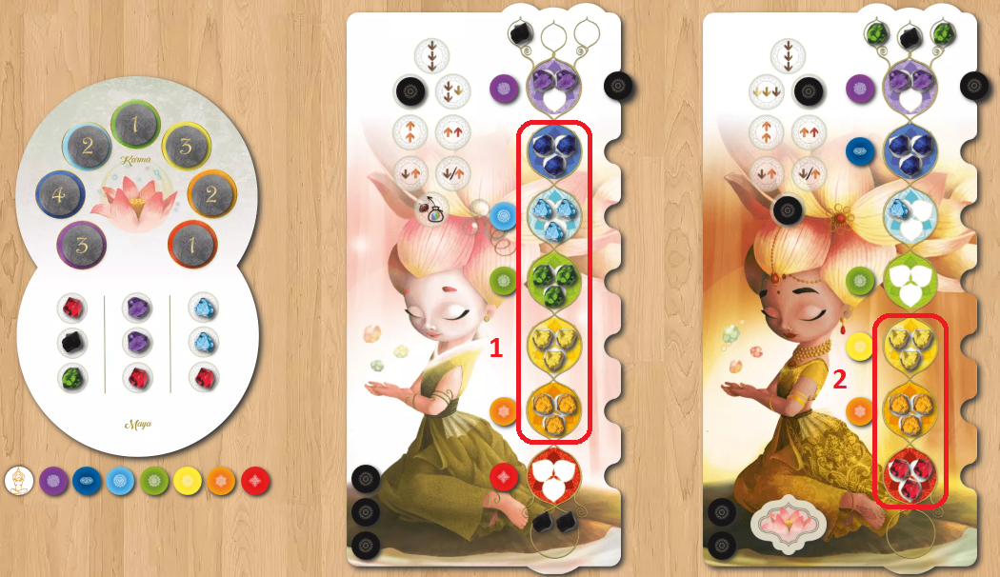

Chakra
Board Game Arena 官方规则文档
Components & Setup
- The common lotus board has 7 coloured karma spaces for the face down plenitude tokens. Each token shows a value from 1 to 4, which indicates the number of plenitude points that a player wins when they have harmonized the corresponding Chakra. There are 8 tokens total (2 of each value) - each game, one is unused.
- The bottom half of the lotus board has three vertical streams of maya flow holding the energies.
- The universe bag has different energies, 3 of each colour per player.
- Each player has 5 inspiration tokens and a randomly allocated coloured meditation token which allows them to see the initial value of one plenitude token.
Goal
Get the most plenitude points by harmonizing (placing three energy of the right colour) chakras and alleviating negative energies.
Gameplay
During their turn, the player performs one of these 3 actions:
Receive Energies
- The player takes 1, 2, or 3 energy of different colours from the same maya flow (vertical column).
- If a player wants to take energy from a flow that shows at least 1 negative energy (black), they must take it, with or without other energy gems of different colours.
- All the energy that a player has taken must be placed in the same location:
- Either on the bhagya bubbles above the purple Chakra (each bubble can hold only one energy).
- Or directly on a chakra, after having placed an inspiration token in the notch next to the chakra.
- Each chakra can hold up to 3 energies. If there is already an inspiration token in the notch, placing energy directly on this chakra is no longer allowed.
Channel Energy
- The player places one of their Inspiration tokens on one of the 8 Inspiration spaces (movement) of their board, if there is no token on it yet.
- Then, they perform the corresponding action.
- All the moves indicated by the chosen action must be performed. If it is not possible, this action cannot be chosen.
- A move is allowed if there is a free space on each chakra that you cross and/or reach.
- The indicated moves are not simultaneous: the player chooses in which order they are performed.
- If a chakra is harmonized (entirely filled with energy of the same colour), energies can skip this chakra without counting towards the moves performed.
Actions
- Move down three energies by one chakra.
- Move down one energy by two chakras, and another energy by one chakra.
- Move down one energy by three chakras.
- Move up one energy by two chakras.
- Move up two energy by one chakra.
- Move down one energy and move up another energy by one chakra.
- Move one energy up or down by one Chakra.
- Discard one alleviated energy (a black energy at the lowest position), and then choose one energy from the bag. You must place it in an available Bhagya bubble at the top.
Meditate
When a player meditates, they perform these 2 actions:
Take Inspiration
- They take back all their Inspiration tokens placed on Inspiration spaces.
- Meditating does not allow a player to take back the Inspiration tokens placed in the notches next to the Chakras.
- A player can meditate even when all their Inspiration tokens are not used.
Look
- They choose a new coloured Meditation token and place it on their individual board next to the same-coloured Chakra.
- Then, secretly look at the corresponding Plenitude token.
Fine Points
Harmonizing a Chakra
- A Chakra is harmonized when a player has collected 3 energy of its colour on it.
- If an Inspiration token was placed in the notch next to the harmonized Chakra, the player immediately takes it back.
Alleviating Negative Energies
- When a black energy reaches the earth (the area under the red Chakra), this energy is considered as alleviated.
- The number of alleviated energy that the earth can hold is unlimited.
- Each one is worth 1 point at the end of the game.
End of the Game
- The end of the game is triggered when a player has at least five harmonized Chakras at the end of their turn.
- The current round is finished, allowing all players the same number of turns (check the First player token for a reminder).
Final Scoring
- The 7 Plenitude tokens placed on the Lotus board are revealed, and each player counts their plenitude level.
- Players gain 1 to 4 plenitude points for each harmonized chakra.
- Players also gain 1 plenitude point for each alleviated energy.
- Any negative energy still on the player’s board do not count as negative points.
- Each player counts, on their board, the number of aligned harmonized Chakras, from the bottom to the top. The player(s) with the most Chakras thus aligned gain 2 plenitude points.
- Most plenitude points wins.
Example

The first player scores:
- For the harmonized chakra - 12 points (blue - 4; light blue - 2; green - 1; yellow - 3; orange - 2)
- For alleviated energy - 2 points (1 point per each)
- Total: 14 points
The second player scores:
- For the harmonized chakra - 10 points (blue - 4; yellow - 3; orange - 2, red - 1)
- For alleviated energy - 0 points
- Harmonization bonus: 2 points
- Total: 12 points
First player wins.
Harmonization explanation: to work out who will get the harmonization bonus, see whether either player has harmonized the red chakra.
- If no player has harmonized their red chakra, no-one gets the harmonization bonus.
- If only one player has harmonized their red chakra, that player will get the harmonization bonus•.
- If more than one player has harmonized their red chakra, those players check their orange chakra for completion, continuing upwards from red to see who has the longest unbroken sequence of harmonized chakras. This player will get the harmonization bonus.
Variants
Module A: Yin Yang
- There are 3 positive energies (white) per player in the universe bag.
- If a player wants to take energy from a flow with at least one positive energy (white), they must take it with other energies.
- White energies cannot be taken with black energies.
- A Chakra is considered temporarily harmonized when it contains 3 energies with at least one positive energy.
- However, inspiration tokens cannot be returned and it scores no points at the end of the game.
- When both a black and white energy are on the same chakra at the end of your turn, discard both energies and get a half yin-yang token.
- At the end of the game, each complete yin-yang scores 3 points while half a yin-yang scores 1.
- You can move a white energy onto the earth but it scores no points at the end of the game.
Module D: Objectives
- Reveal 3 objectives in the centre of the table if there are 3 or more players, else 2.
- Place a token of 2 and a token of 1 points on each objective.
- The first player to achieve an objective takes the 2 value bonus, while the second player to achieve the same objective takes the 1 value bonus.
- A player cannot take both bonuses for the same objective, even if it can be achieved more than once during a game.
- At the end of the game, add the value of your bonuses to your total score.
Objectives
- Harmonize the chakras shown (3 possibilities - blue and orange / light blue and yellow / purple and red).
- Have at least one energy in each chakra.
- Harmonize 3 successive chakras.
- Harmonize 2 pairs of different chakras touching each other. (3 successive does not qualify.)
- Collect all meditation tokens.
- Alleviate 3 black energies.